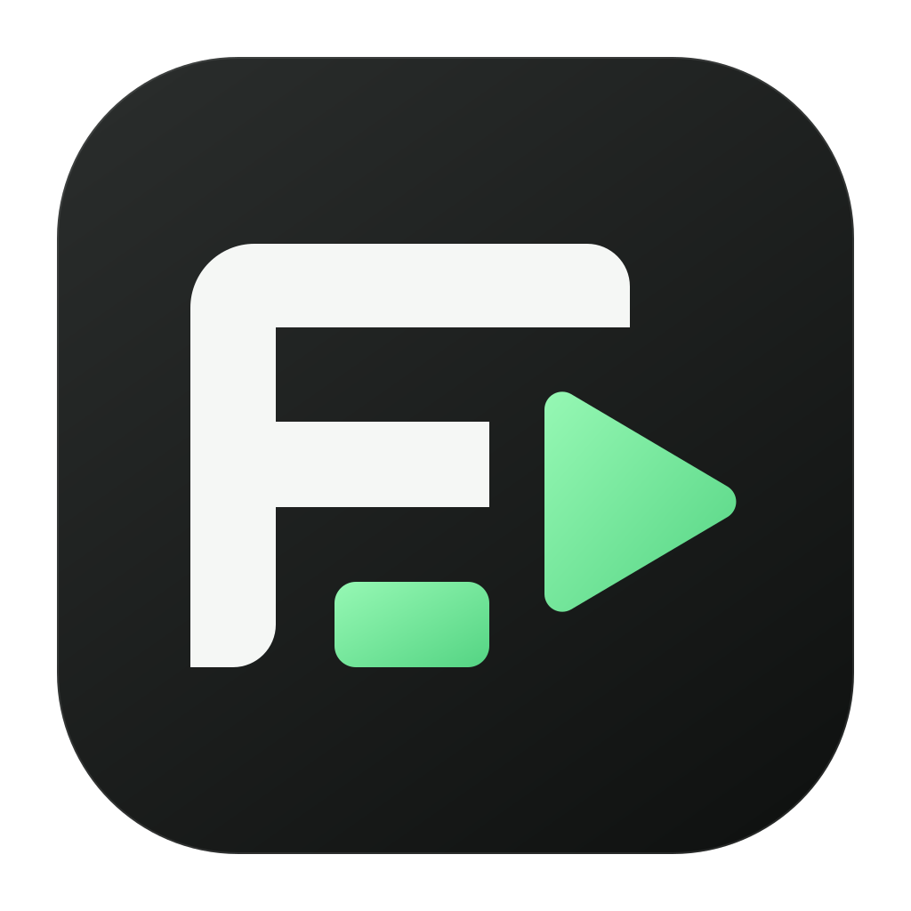

Get the thought down.
Write in scenes. Read with a teleprompter. Split your script where the story changes.
⌘↵ New scene at cursor
SceneForgeA LOCAL STUDIO. AN OPEN CANVAS.
Write your script, record your screen, and shape the story. SceneForge brings your video workflow together. Ask Claude to edit selected clips in the app, or connect your own assistant through MCP.
Interface illustration with synthetic content. Preview features are still evolving.
LESS FRICTION. MORE MAKING.
Keep your script, recordings, timeline, and export in the same workspace.
Write in scenes. Read with a teleprompter. Split your script where the story changes.
⌘↵ New scene at cursorChoose a display, window, or region. Check live sources, count down, then record with movable camera/script controls. Review the take before confirming it into your scene.
Separate media tracksTranscribe locally by default. Delete a phrase and its footage, trim the timeline, or review Auto-cut and Visualize proposals before applying them.
B Blade ⌘B SplitREVIEW IT. MAKE IT YOURS.
Keep control of what reaches the timeline.
Select transcript words to remove the matching interval across tracks. Play it back, and Undo when needed. Automatic transcription stays on your Mac.
Read the editing guideAuto-cut and Visualize run locally by default. Review reasons and rendered frames, then apply selected changes across the project.
Optional Claude narrative cuts share transcript context and use your Claude account. Provider usage and costs apply. Visualize does not verify external claims.
Count down, record, then review separate sources and waveforms. Keep previous attempts on scene cards. Replace, keep takes sequentially, or record over. Confirm stays in the scene; choose Confirm & edit for the timeline.
Read the recording guideNative recording includes a green capture border. Short four-source desktop and selected-region takes passed full decode and sampled editor/control exclusion. Long-session synchronization remains under review. See validation ↗
EXPORTED IN SCENEFORGE.
A small idea, made real. This 12-second sample was assembled through SceneForge’s MCP tools and rendered by its local editor—with scene cuts, timed graphics, narration, and captions.
Original synthetic visuals and local speech. No private footage.
“SceneForge. Write your story.”
“Shape the rhythm. Make the cut.”
“Ready to share. Export with confidence.”
YOUR ASSISTANT, IN THE EDIT.
Open Ask Claude in the editor. It uses your installed Claude Code and existing sign-in. Select clips across tracks, add a time range, and check the context before you send.
That selection stays fixed for the request. Committed changes appear on your timeline, with guarded Undo that protects later edits.
Set up Claude chatPrefer another assistant? The built-in 39-tool MCP server also supports project inspection, export and reviewed recovery. Connect through MCP ↗
Illustrative request. Requires Claude Code 2.1.248+ and sign-in. Provider costs and data handling apply. Inspected frames may include overlapping layers; selection limits edits, not strict visual access.
Projects and media tools run on your Mac. Cloud providers and connected AI assistants can receive the content you ask them to process.
Export a separate native project copy for supported edits. Projects with recording-take history are blocked to preserve archives. Review blockers first; this is partial compatibility with the observed Borumi 0.32.0 format. Read the supported mappings ↗
Linked native groups, some imported effects and device-specific capture cases remain limited. A complete 20-minute export passed decode and audio checks. Exact visual parity and complete hardware capture acceptance remain open.
MAKE ROOM FOR YOUR NEXT VIDEO.
This is an early Apple Silicon preview. Keep original footage and review exports before relying on it for a finished project.
Download SceneForge DMG Prefer a ZIP archive? Download ZIP ↗Release notes & checksums ↗Drag SceneForge onto Applications in the installer, then eject the disk image and open the app from Applications. Requires Apple Silicon and macOS 14 or later.
FFmpeg, Whisper and the English speech model are included. Local editing, export and English transcription need no separate media-tool installation. Other languages require a suitable model. Source builds need the documented runtime tools.
Setup guides you through camera, microphone and screen access. Check your preview before recording, or skip permissions and import existing footage. For AI editing, open Ask Claude after signing in to Claude Code, or connect another assistant from Settings → AI control · MCP.
This prerelease is Apple Development signed with a stable identity and has not been notarized by Apple. macOS may block its first launch. It has no automatic updater. Review the source and release notes; Apple documents the Open Anyway procedure for apps you choose to trust.